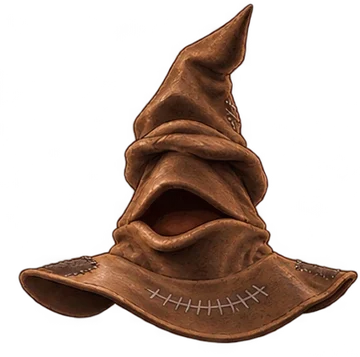
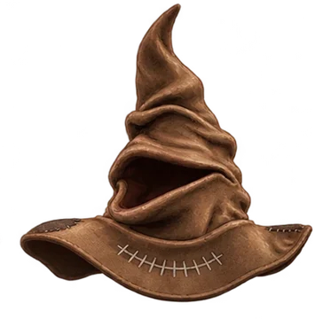
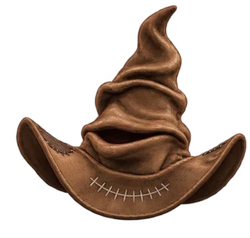
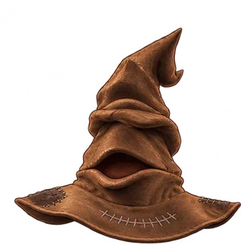

Rafaela chegou ao castelo sem uma casa. Ajude-a a dominar o Future Continuous e o Future Perfect para descobrir onde ela pertence.



Rafaela está pronta para avançar no estudo do inglês.
Future Continuous & Future Perfect no método ODU Chunking.
Toque no alto-falante para ouvir cada exemplo.
Idiomas · Educação · Cultura · Design
Material da Unit 21 — Prof. Diego Horta